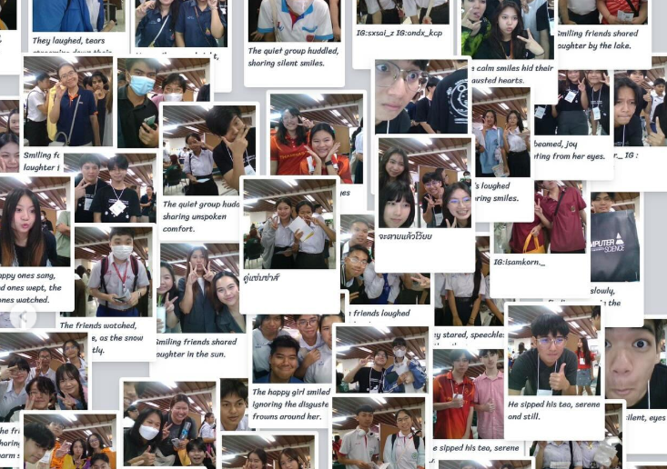
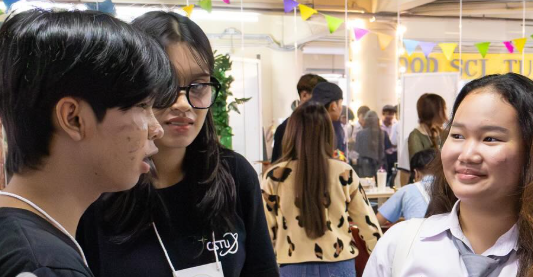

Courses Review
CS100
The teacher is lovely, not too strict, and makes learning enjoyable. The lessons are fun and can be applied in many ways.
CS101
It's quite difficult to understand at first, but the teaching helps clarify the thought process and problem-solving methods.
CS102
It's enjoyable but requires a lot of understanding and practice. I wish the teacher would guide us through some lab sessions as well.
Activity in CSTU
Open house


Expectation
Graduated from here
Passed 101, and am happy with my choice.
After graduation, life quality improved
Before graduating, I interned at KBTG.
The goal is to complete my studies.